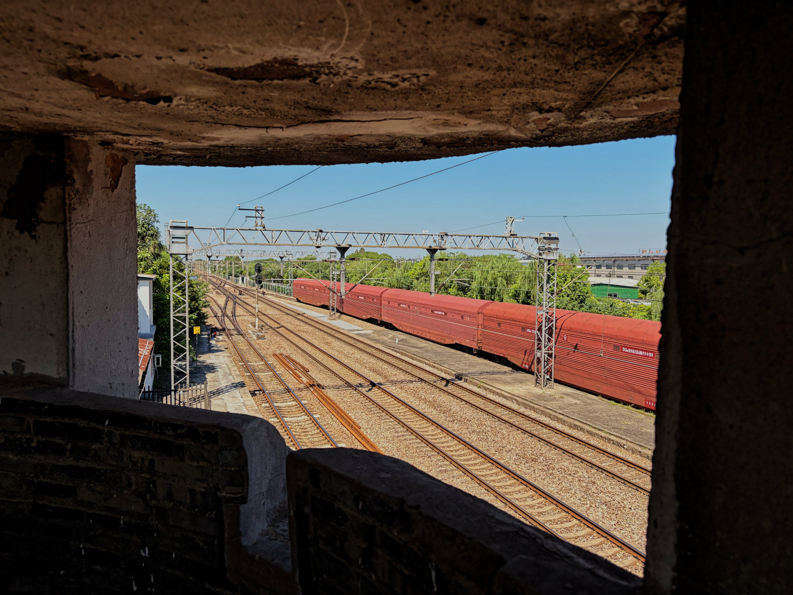
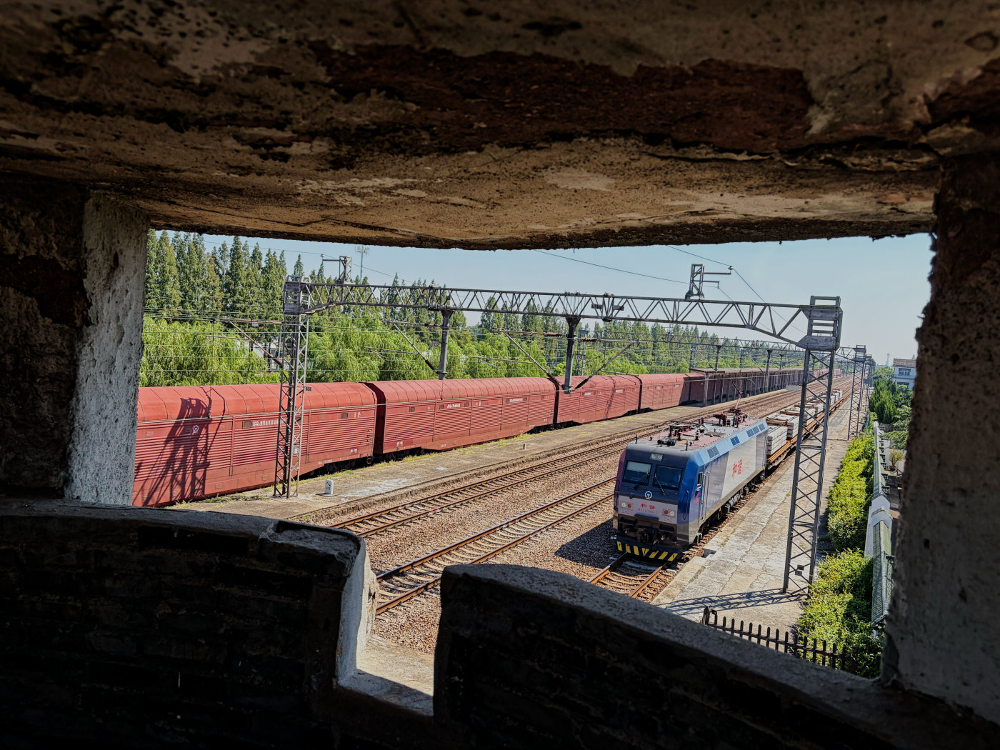
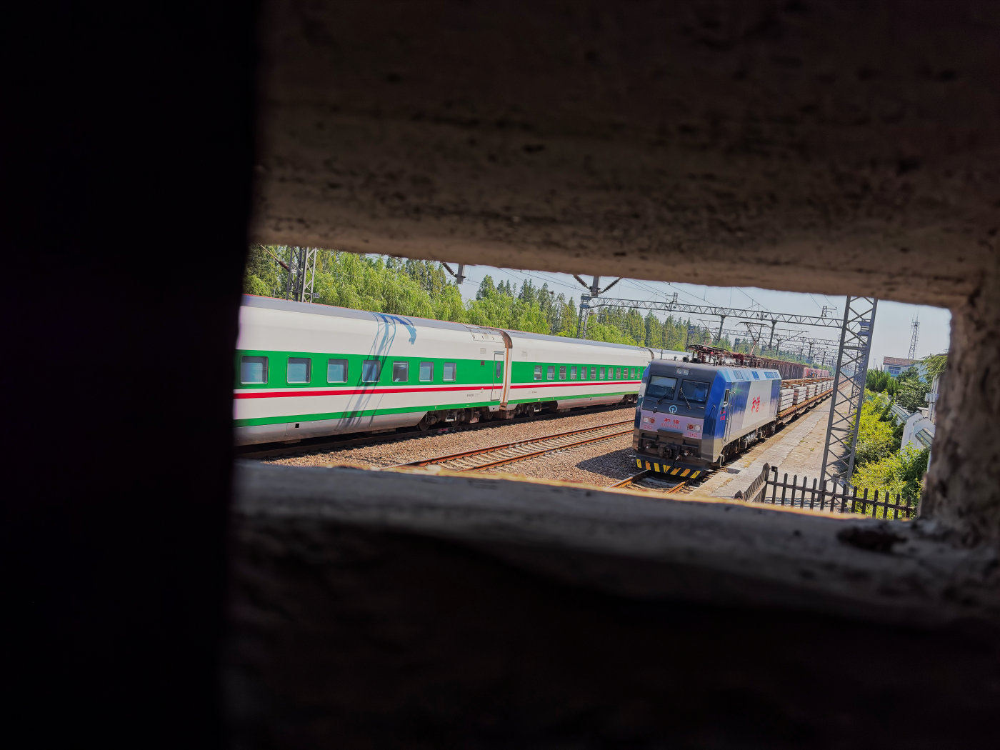
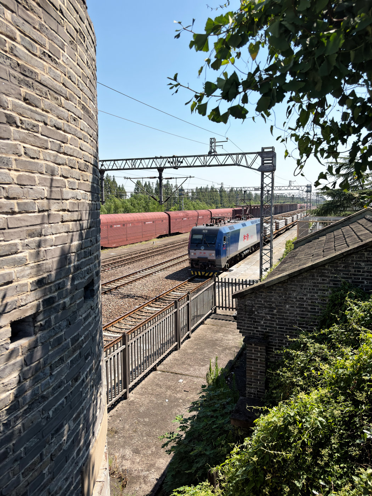

摄友之间有句俗语：相机不够拍，手机来凑。
那天我们在斜桥火车站旧址拍照。景区管理员见我们远道而来，又拍得认真，破例打开了平时锁着的炮楼，让我们进去看看。
机会难得。可那天手里只有 Olympus 35SPn，炮楼里狭窄昏暗，用胶卷拍实在没什么把握；何况后面还要去老街，我也想省着点拍。
于是想起了那句俗语，拿出了备用武器——iPhone Air。
从炮楼望出去，风景截然不同。
ENGLISH
Photo Walk NO.010 | A Quick iPhone Shoot at the Former Xieqiao Railway Station
There is a joking saying among photographers: When the camera isn’t enough, there’s always the phone.
That day, we were taking photographs at the former Xieqiao Railway Station. Seeing that we had come from some distance and were photographing the place with such care, the site manager made an exception and unlocked a blockhouse that is normally closed to visitors.
It was a rare opportunity. But all I had with me was an Olympus 35SPn. The interior was cramped and dim, and shooting film there felt a little uncertain. I also wanted to save a few frames for the old streets we planned to visit later.
So I remembered that old saying and reached for my backup camera—the iPhone Air.
From inside the blockhouse, the railway looked completely different.




